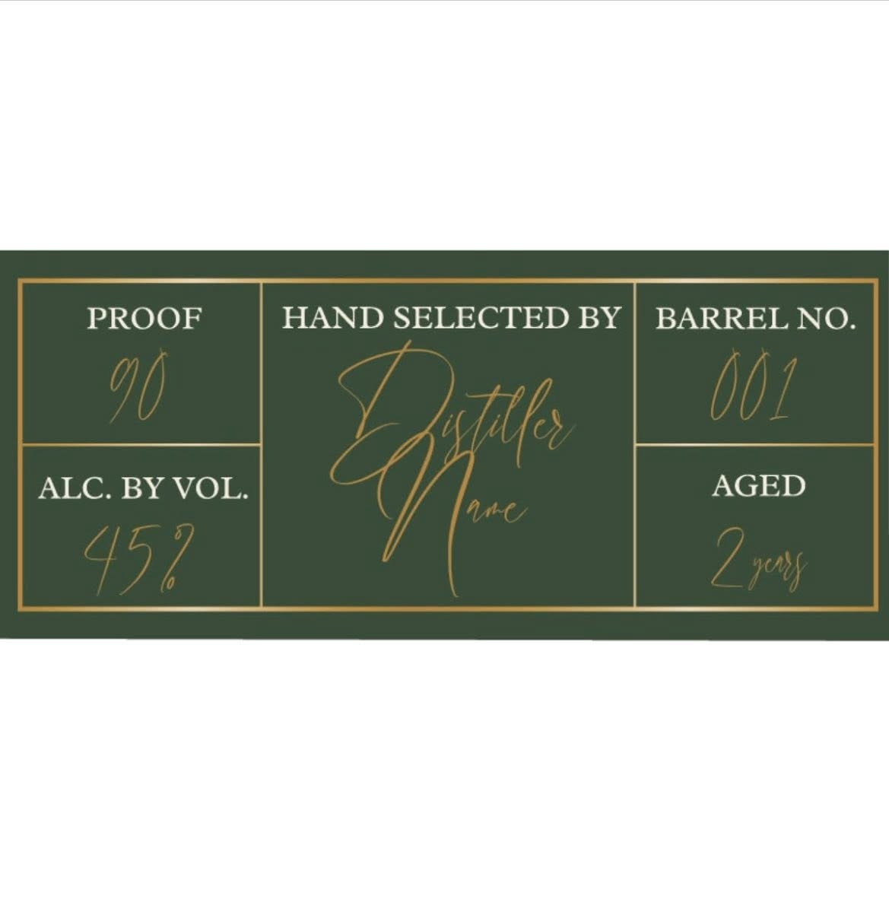

Brand Website
A premium home for release pages, founder story, bottle presentation, trade credibility, and future growth.
Louisville, Kentucky
A Louisville bourbon brand shaped by barrel selection, patience, and the belief that not every barrel deserves the label.
The Story
Oak & Age begins with a simple belief: not every barrel should wear the label.
The point is not to bottle more. The point is to bottle better.
Built around selection, patience, and character, Oak & Age is a Louisville bourbon concept meant to feel grounded, premium, and unmistakably deliberate.
As the brand grows, this story can expand into founder history, barrel philosophy, release notes, and the full shape of the label.
Featured Release
Every release needs more than specs. It needs presence.
Oak & Age should present each barrel like a moment worth noticing: proof, age, character, tasting notes, and release story all working together to make the bottle feel real before it ever reaches the shelf.
For now, Barrel 001 establishes the format. Over time, this section becomes the center of the brand’s release system.

Barrel 001
This section is designed to evolve into a proper release block with tasting notes, mash bill, barrel source, release count, bottle photography, and launch story.
Brand Philosophy
This is the line the brand should build around. It is sharper and more ownable than generic bourbon language about heritage and craft.
Oak & Age should speak like a confident selector: measured, exact, and willing to leave good barrels behind in pursuit of better ones.
The best bourbon brands do not sound busy. They sound certain.


Louisville Advantage
Oak & Age has the opportunity to become more than a bourbon label. Positioned correctly, it can become part of how people discover bourbon in Louisville.
That means building for more than aesthetics. It means creating a digital presence that supports local discovery, tourism relevance, hospitality partnerships, release events, and search visibility around Louisville bourbon culture.
This is where the site stops being a brochure and starts becoming infrastructure.
What This Can Become
This is not just a landing page. Done right, it becomes the foundation for release storytelling, local discovery, bourbon tourism visibility, and a more strategic social presence.
A premium home for release pages, founder story, bottle presentation, trade credibility, and future growth.
Discovery pages built around Louisville bourbon, small-batch search intent, and tourism-aware answers.
Release announcements, brand storytelling, tasting content, and local bourbon relevance that actually fit the tone of the label.
Stronger support for restaurants, bars, events, tastings, and local placements across Louisville.
Follow the Journey
Use this section now for Facebook. Expand it later into Instagram, email capture, release alerts, tasting announcements, and event updates as the brand matures.